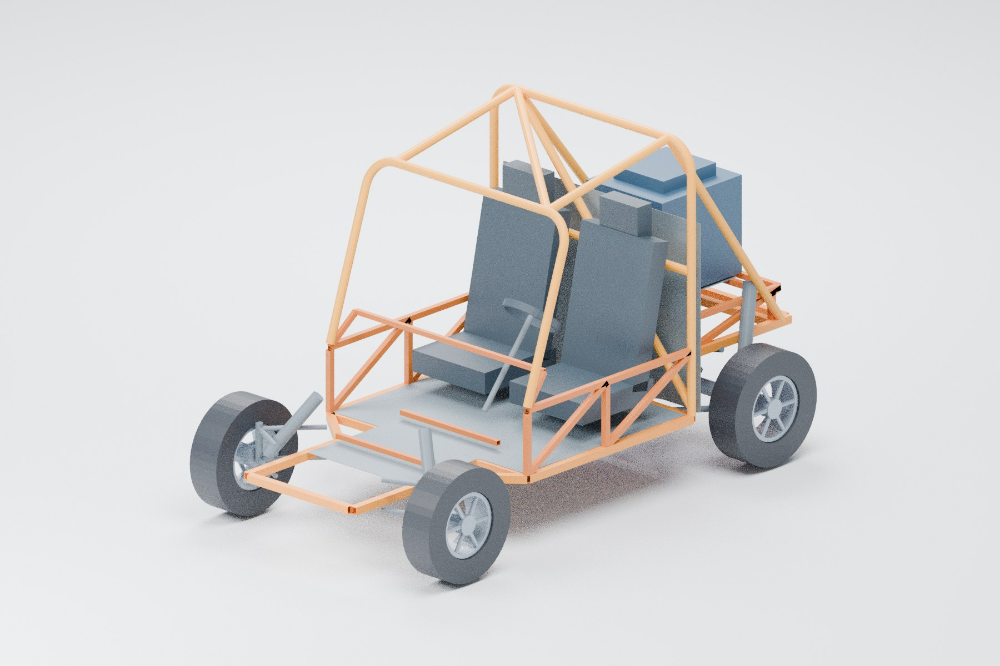

ДВУХМЕСТНЫЙ БАГГИ / ЭСКИЗ 0.1
Багги для двоих.
Проект в деталях.
Открытая трубная рама, два отдельных места и цельный задний мост. Вся компоновка — от посадки до раскроя труб — в одном проекте.

Цельный задний мостV.01 / 2026
Рама 3 000 мм
База 2 200 мм
Кабина 1 300 мм
Труба 60 м
01 / ИНТЕРАКТИВНАЯ МОДЕЛЬ
Рассмотрите
с любой стороны.
Вращайте одним пальцем. Разведите два пальца, чтобы приблизить. На компьютере используйте мышь и колесо прокрутки.
Оранжевый — рама и дуги. Серый — условные узлы ходовой. Габариты двигателя и трансмиссии показаны для компоновки.
Скачать GLB02 / РАЗМЕРЫ И ПОСАДКА
Всё начинается
с посадки.
Кабина скомпонована под двух взрослых ростом до 190 см. Задняя часть рамы поднята над мостом, чтобы оставить пространство для подвески.
- Длина рамы по осям
- 3 000 мм
- Колёсная база
- 2 200 мм
- Ширина кабины по осям
- 1 300 мм
- Верх главной дуги по оси
- 1 750 мм
- Габарит модели с колёсами
- 3 040 × 1 575 × 1 773 мм
Размеры назначены для этого эскиза. Посадку и зазоры нужно проверить с реальными сиденьями и агрегатами.
03 / РАМА И МАТЕРИАЛЫ
Каждая труба
учтена.
59 трубных деталей с номерами, координатами и длинами заготовок. В карте раскроя учтены припуски, обрезка торцов и пропил 3 мм.
Трубы к закупке
10 хлыстов по 6 метров
Рычаги подвески и окончательные опоры агрегатов, сидений и ремней считаются отдельно.
| Сечение трубы | Назначение | Закупка |
|---|---|---|
| 40 × 40 × 2 | Нижняя рама | 18 м |
| 30 × 30 × 2 | Связи и опоры | 18 м |
| 25 × 25 × 2 | Вспомогательные детали | 6 м |
| Ø45 × 3 | Дуги и подкосы | 18 м |
Ссылки на материалы и комплектующие +
Полный список и статус найденных цен — в ведомости XLSX. Совместимость узлов и актуальную стоимость уточняют при подборе.
04 / ОРИЕНТИР БЮДЖЕТА
Смета с видимым
составом затрат.
Материалы, двигатель, ходовая, привод, тормоза, сиденья, работы и доставка перечислены в одной таблице.
Смотреть сметуБез резерва 20%, покупки инструмента и оплаты всей сборки. Уже имеющиеся донорские узлы уменьшают бюджет. Это ориентир, а не коммерческое предложение.
05 / ДОКУМЕНТЫ ПРОЕКТА
Всё для обсуждения
с заказчиком.
Описание проекта
Компоновка, материалы, этапы изготовления и перечень необходимых обмеров.
Открыть руководство PDF / 7 ЛИСТОВ A3Чертежи и разметка
Виды с размерами, схема стапеля, гибка дуг и карта раскроя хлыстов.
Открыть чертежи XLSX / 59 ДЕТАЛЕЙВедомость и смета
Координаты, длины заготовок, закупка труб, смета и ссылки на поставщиков.
Скачать таблицу ↓Эскизный проект.
Основа для точной версии.
Компоновка подготовлена под заданную посадку. Принят неукороченный мост типа ВАЗ. Размеры исходной машины по одной фотографии не восстанавливались.
Перед изготовлением нужны обмер выбранных агрегатов, рабочие чертежи креплений и проверка прочности, кинематики подвески и тормозов. Показанная модель помогает обсудить конструкцию и бюджет.